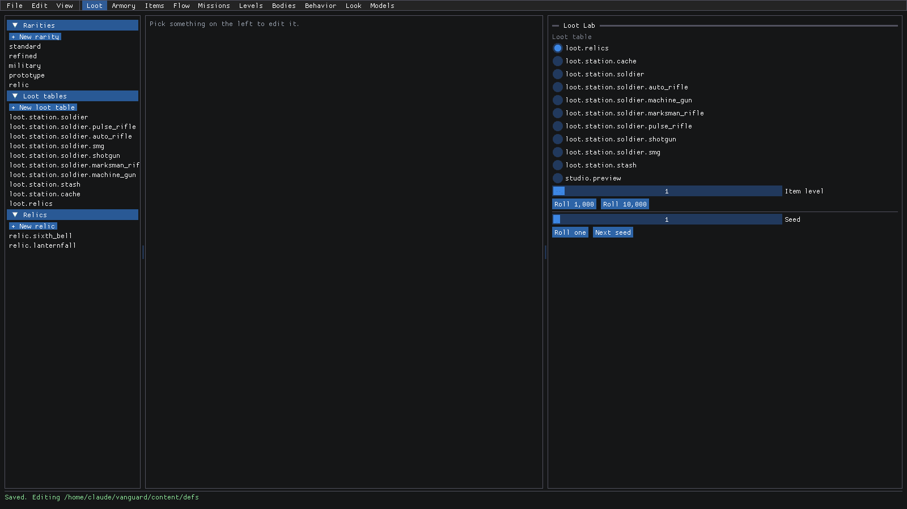
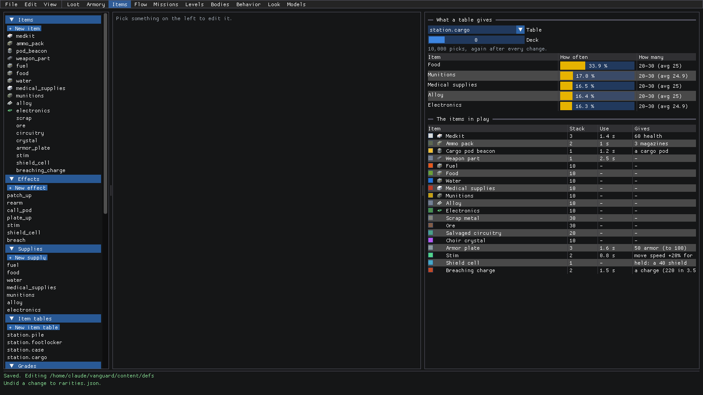
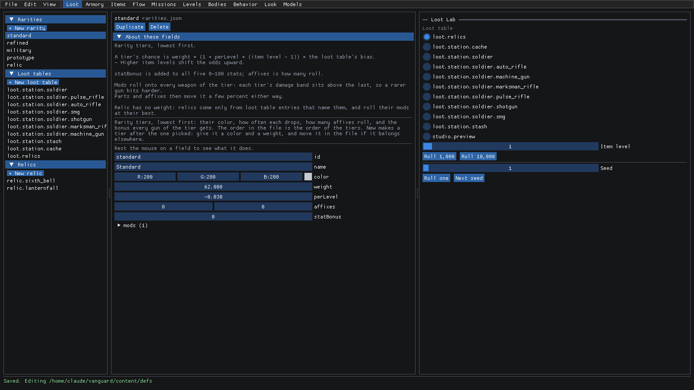
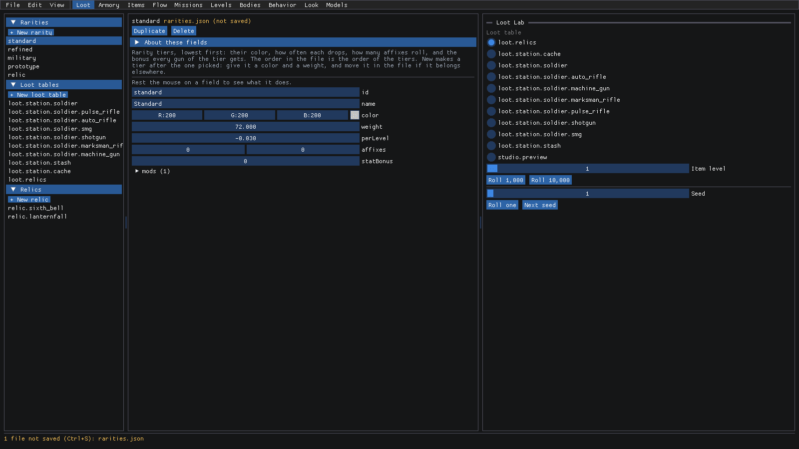
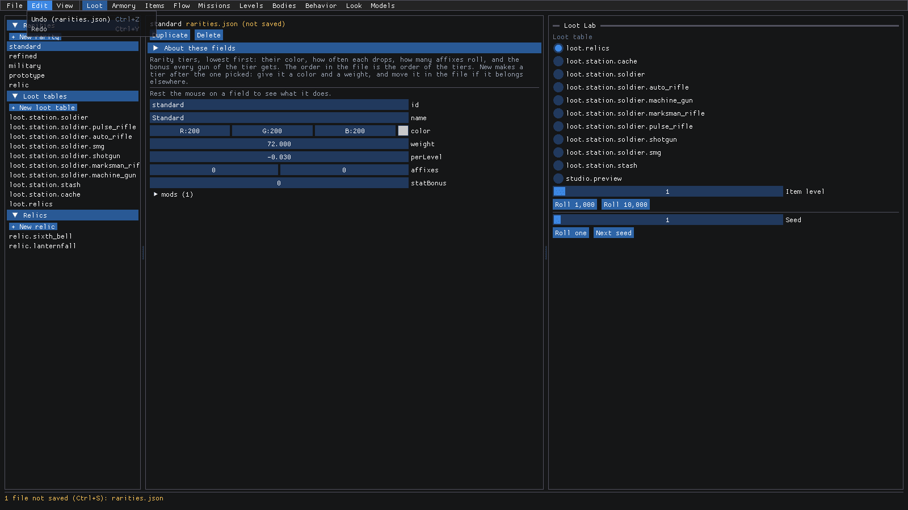
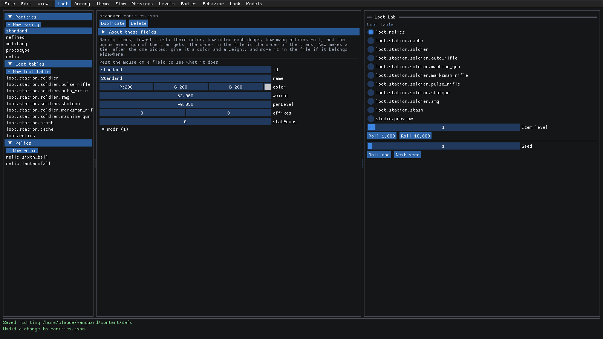
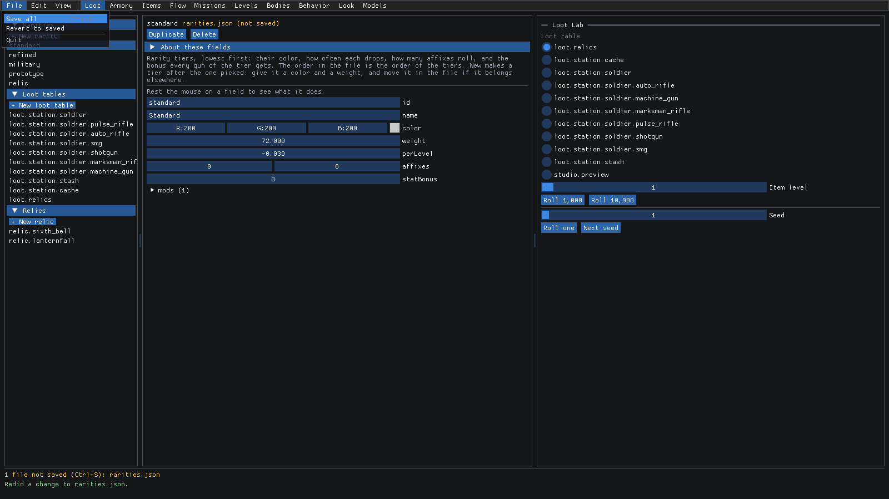
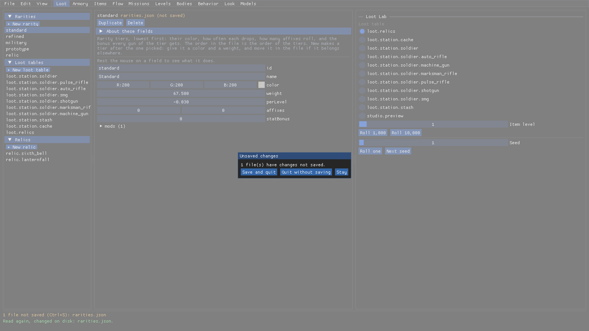
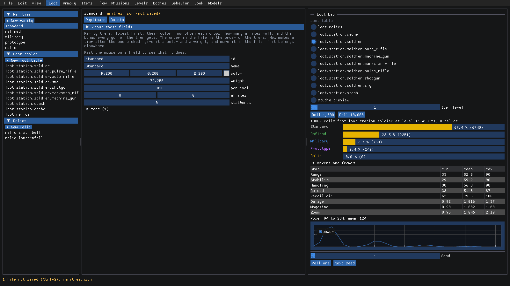

Getting started with Studio
LastFleet Studio is where we tune the game's data. Rarities, guns, items, missions, levels, enemies... nearly
everything you'd want to tweak is a JSON file under content/, and Studio is the friendly way into those files.
Why not just open the JSON? You can, but you'd be guessing. Studio runs the game's own code right next to the data, so you see what a change does the moment you make it: across thousands of loot rolls, on a gun's numbers, or in your own hands on the range. And nothing touches the files until you save!
This guide covers what's the same in every mode: opening Studio, finding your way around, editing a field, saving and undoing. The other guides go mode by mode.
How to open it
From the repository:
dotnet run --project src/LastFleet.Studio
Studio edits the content/ of whichever repository you run it from. It finds the repository by looking for
LastFleet.slnx above the program, or above the folder you're in.
Want to skip the clicking? Flags go after a --:
--mode <name>opens straight into a mode:loot(the default),armory,items,flow,missions,levels,bodies,behavior,lookormodels.--select <id>opens with that definition already picked (--select standardfor the Standard rarity). Use<list>:<id>when the same id lives in more than one list (--select supplies:water).--helplists the rest. Many modes have their own, like--rangeor--graph, and the mode guides cover them.
So dotnet run --project src/LastFleet.Studio -- --mode loot --select standard opens right where the next section
starts.
A quick tour
Here's what you get with no flags at all:

Along the top:
- File, Edit and View are the menus. More on those below.
- Then the mode tabs: Loot, Armory, Items, Flow, Missions, Levels, Bodies, Behavior, Look and Models. The highlighted one is the mode you're in. Click another to switch.
Most modes are laid out the same way:
- The left column lists every definition the mode edits, grouped by file (here: Rarities, Loot tables and Relics). Each group has a + New button under its title.
- The middle is the editor for whatever you've picked on the left.
- The right is the mode's preview. In Loot mode that's the Loot Lab. Other modes have a 3D view, a sandbox, a map...
- The status bar along the bottom says whether everything's saved, and which folder you're editing.
Every pane can be resized by dragging the bar between them (there's a faint grip in the middle of each bar). Studio remembers your sizes for next time.
Switching modes is just a click. Here's Items, with its own lists down the left and its own previews on the right:

Edit a field
So you want to change something? Here's the flow:
Pick a definition on the left. We'll click standard under Rarities.
The middle fills in. At the top is the definition's id and the file it lives in (
rarities.json), with Duplicate and Delete. Under that is a short note on what this list is for and how to add to it, and then the fields themselves.Not sure what a field does? Rest the mouse on it. Every field has a tooltip, and they're written for designers, not programmers. Here's
perLevel:Want the bigger picture? Click About these fields. It opens the notes from the top of the file itself, so they're always the notes the team wrote alongside the data. Click it again to fold them away.

Now change something. Number fields work like sliders: drag left or right on
weightto change it (or double-click it to type a number). Text fields, likename, you just click and type in.The moment you change it, two things happen. The header says
rarities.json (not saved), and the status bar turns orange: 1 file not saved (Ctrl+S): rarities.json.
A few more things about fields that are worth knowing up front:
- A field that refers to something else (a rarity, a maker, a frame, a part...) is picked from a list of what exists, so you can't make a typo. A name Studio doesn't recognize is marked in red.
- A field that's been left out of the file uses its default. It shows greyed out, with set to write a value in.
- Lists (a table's entries, a rarity's
mods) open as a tree. x removes a row and + add adds one. - + New adds a copy of the selected entry at the end of the list, with the id
new. Duplicate copies it right after itself. Delete removes it, and anything that refers to it will stop loading.
What if a change breaks the data, like a table naming a frame that doesn't exist? The bottom of the window tells you what's wrong, using the game's own error message, and the previews keep showing the last version that worked. The game would refuse the data in that state, so fix it before you save.
Undo and redo
Changed your mind? Ctrl+Z undoes the last change, in any mode and any file. Ctrl+Y (or Ctrl+Shift+Z) redoes it.
Open the Edit menu. Undo names the file the change was in, so you always know what you're about to undo.

Click Undo (or press Ctrl+Z). The weight goes back to 62, and the status bar says what happened: Undid a change to rarities.json. Since that's exactly what's on disk, it's back to Saved. too!

What counts as one change? A whole drag, from grabbing the field to letting go, or a whole bout of typing in a field. While you're still typing in a field, Ctrl+Z undoes just your typing. Studio keeps the last 200 changes.
Save your work
Nothing's written to the files until you save. When you're happy:
Press Ctrl+S, or open File and click Save all. Revert to saved is in there too, for throwing away every change since the last save.

The status bar goes back to green: Saved. Editing and the folder.
Studio writes each file in the same layout it was already in, comments and all, so a save only changes the lines you edited. That keeps the diff small and easy to review. One heads up: only the comment block at the top of a file (the one About these fields shows) survives a save. Comments anywhere else in the file are lost.
Edited a file by hand while Studio was open? Studio reads it again as soon as it changes on disk, and the status bar says so. If you had unsaved changes in that file, yours are kept: save to keep them, or Revert to saved to take the version on disk.
Closing with unsaved changes
What if you forget to save? Studio has your back. Close it (or File > Quit) with changes still pending, and it asks first:

- Save and quit saves everything, then closes.
- Quit without saving throws the changes away.
- Stay takes you back to where you were.
Seeing a change
Editing numbers blind isn't much fun, so every mode has a way to show you what a change actually does. Here's a taste in Loot mode:
- In the Loot Lab on the right, pick
loot.station.soldier(what a station soldier drops) and click Roll 10,000. Standard comes out at 62.5% of the drops. - Now drag the standard rarity's
weightup, from 62 to about 77. The Lab rolls the same 10,000 again on its own, and Standard climbs to 67.4%, with every other rarity a little rarer.

That's it! Every mode has its own version of this: Armory's Preview and range, Items' What a table gives, Behavior's sandbox, and so on. The mode guides walk through each one.
What about the game itself? The running game doesn't pick up a save, so save in Studio, then start the game (or restart the mission) to play with your new data. The grey-box range is a quick place to try a gun:
dotnet run --project src/LastFleet.Client -- --level range
Where to next
- The reference covers every field. The sections on running it, editing and seeing a change go deeper on everything above.
- loot.md: rarities, loot tables, relics and the Loot Lab.
- armory.md: the guns, their parts, the 3D preview and the range.
- items.md: items, effects, supplies and crafting.
- Not sure whether something is data or code? adding-content.md covers what you can add in Studio, and what still needs a programmer.